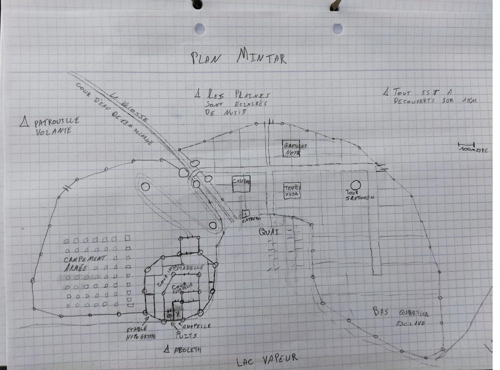
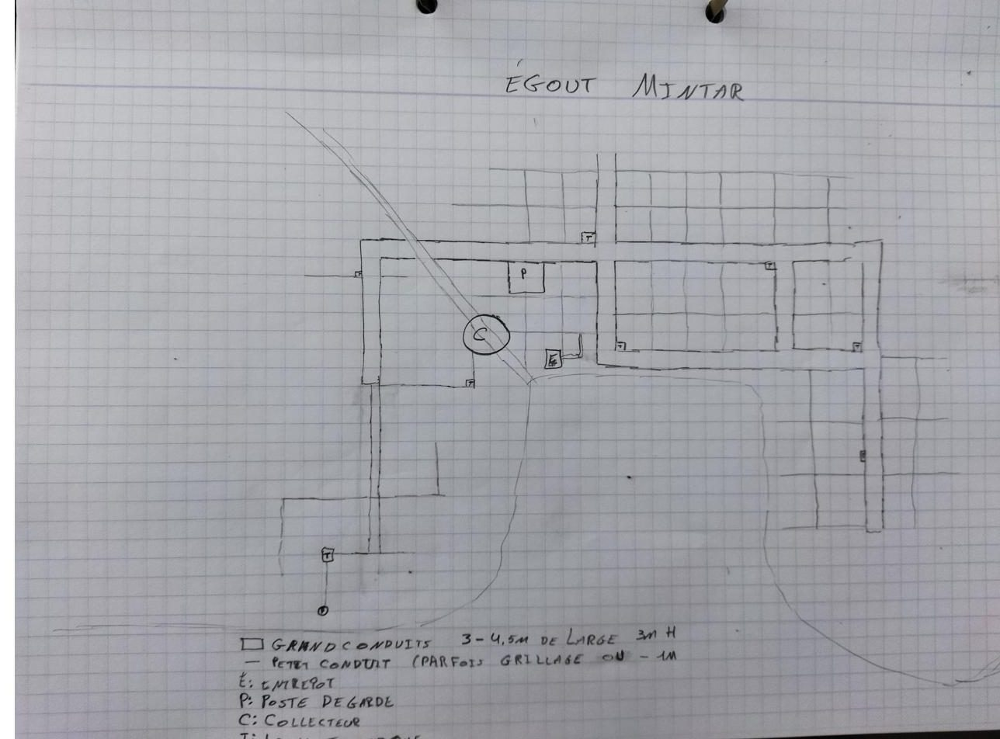
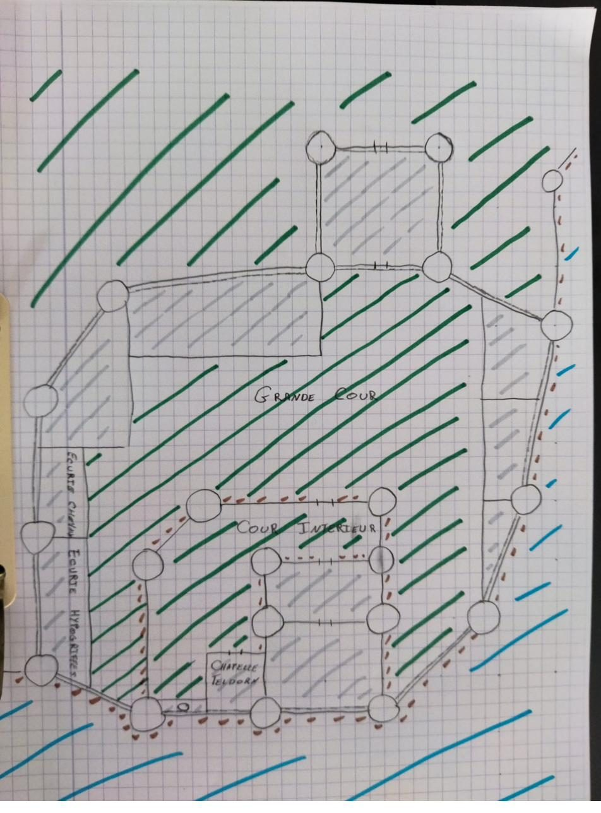
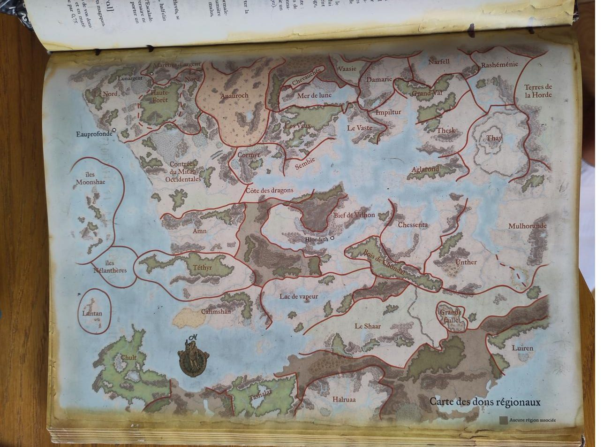

Lieux et cartes
Le Lac de Vapeur, le comté du Clos et la citadelle de Mintar.
La région, en schéma
Les lieux
| Lieu | Ce qu’on en sait | Sources |
|---|---|---|
| Saelmur | Cité de la rive nord, sur quatre collines : grands temples de Torm, Tyr et Heaume, université des mages-lames, Parlement des marchands, bas quartiers et docks. Remparts de 10 m, camp de réfugiés et camp militaire de Tyr. 25 000 à 30 000 habitants. Attaquée le 20 Ches 1373 par Alcatar et Mintar, selon les documents. | Aventure 2, Vandor |
| La rue des Tanneurs | Sur la colline bourgeoise et marchande de Saelmur. Au n°6, la maison du magicien complice d’Alcatar, en cours de vente ; cave pleine de traces de sang et de fers. | Aventure 2 |
| Mintar | Port de la rive nord-ouest, tenu par Teldorn Sombre-Espoir, ennemi de la région. Théocratie de Teldorn depuis 1362. Citadelle sur la falaise, chapelle privée, égouts gardés par un gauth, baie infestée d’aboleths. À moitié brûlée par Balagos le 15 Tarsakh 1373. | Plan d’Elrayck, Teldorn, plans ci-dessous |
| Derlusk | Ville natale d’Isidoro, sur la rive sud-est. Grand temple de Lathandre fondé par son père ; un espion de Teldorn y a été égorgé. | Journal 1, Teldorn |
| Ankhapur | Grande cité de la rive nord. Taxe d’entrée de 50 po pour les prêtres ; dockers du Trône de Fer ; scriptorium du Frère Blaise. Relais du convoi du phylactère le 16 Ches 1373. | Journal 1, Teldorn |
| Le comté du Clos | Au nord de Saelmur : plaines à blé, rocaille et vallons, sans patrouilles. Le comte est l’oncle de Théodoric. | Aventure 2 |
| Fort Corner | Bourg fortifié entre Saelmur et le Clos : palissade, 500 à 1 000 habitants, une cinquantaine de soldats, un temple. La garnison paie les primes. | Aventure 2 |
| Glen | Bourg-carrefour à palissade et deux tours. Auberge-casino du Baladin Joyeux. | Aventure 2 |
| L’auberge du Pissenlit Bleu | Point de départ de l’aventure 2. | Aventure 2 |
| Champ-Doré | Hameau de fermes du comté du Clos, avec un temple qui accueille les pèlerins. | Aventure 2 |
| L’abbaye du Cœur Radieux | À 1 km au nord de la route, après une auberge, sentier signalé par une stèle. Ouverte à tous, sans garnison ; de nombreux autels, aucun pour un dieu mauvais, vasques des visions, ruisseau pour se laver les pieds. Visions d’Alaundo. Peter Bridgestone veut l’incendier le 26 Ches 1373. | Aventure 2, Jérôme |
| Bridgestone | Forteresse-pont au nord du comté du Clos, seul pont sur la Minta, face aux terres de Mintar ; retombée aux mains de l’ennemi. Le père d’Isidoro, un moine et le père de Lucas y ont jadis guidé la révolte des esclaves. Livrée à Teldorn par Peter et Jérôme. | Teldorn, Jérôme |
| Le Bois d’Épines | Au-delà de Bridgestone. Une clairière d’arbres de fer aux feuilles en lames, où Elrayck a trouvé Kismet ; des œufs de dragon vert y sont peut-être restés. | Testament |
| La Pinte sans Fond | Auberge près du Clos, QG des Lames de Tymora ; Micheline la tient. Kismet et les documents de Teldorn y apparaissent le 15 Tarsakh 1373. | Le sacrifice de Mintar |
| Kzelter | Cité-garnison à l’extrême est du Téthyr, entre les Monts des Flocons et la forêt de Mir. Théâtre du Miracle de Kzelter ; tenue par Brixen Sombrespoir. | Testament, Teldorn |
| La forêt de Qurth | Près de Derlusk. Alcatar y a mené deux expéditions et soumis des spriggans de l’ombre. | Teldorn, Vandor |
| Innarlith | Cité de l’est du Lac, sous l’influence secrète de Cyric. Le troll Arrk y a été vu. | Teldorn, Vandor |
| Château-Suif | La plus grande bibliothèque de Faerûn, sur la Côte des Épées. Les écrits d’Alaundo et les prophéties de Baine y sont conservés ; on y entre en offrant un ouvrage d’au moins 100 po. Alcatar y a étudié en 1364. | Aventure 2, Barthélemy |
| Les repaires d’Alcatar | La Loge de l’Ossement (ancienne crypte de Thargor Barbe-de-Fer, Monts Nethéres) ; une crypte de géants nécromanciens au Grand Shaar ; une crypte néthérisienne et un second sanctuaire caché sous l’Anauroch. | Vandor |
| Les bastions de Baine | Sous Kzelter, dans les cavernes des Pics des Crépuscules et dans une forteresse des Collines des Serpents, reliés à Mintar par des portails de l’ombre. | Teldorn |
| Le Nord | Lunargent (la Sombre Académie, le Faucon d’Argent), l’Ermitage du Roc Noir, Château-Zhentil, la Citadelle du Corbeau, Rougemélèze sur la Longue Route. | Barthélemy, Vandor |
Les plans de Mintar
Ces plans ont été dessinés pour l’assaut du commando de Théodoric. Cliquez sur une image pour l’ouvrir en grand.






Faerûn

